Welcome To Our Tamil Nadu Food Court
1. Keppai Kali/Ragi Millet

2. Dosai/Dosa Batter
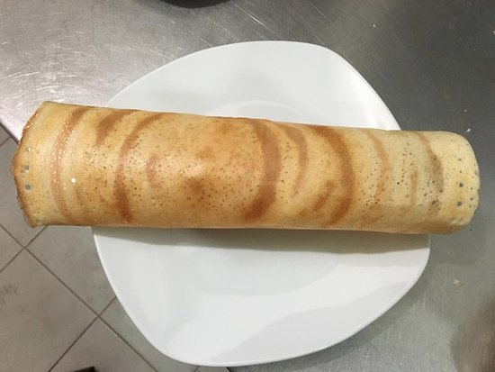3. Idly/Idly Batter
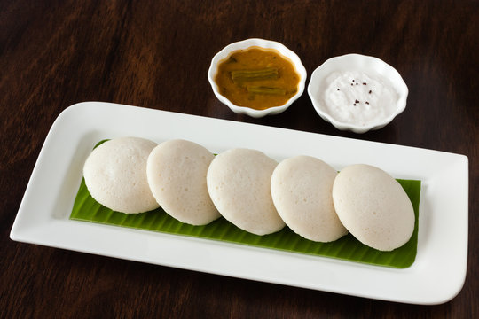4. Idiyappam/Rice Noodles
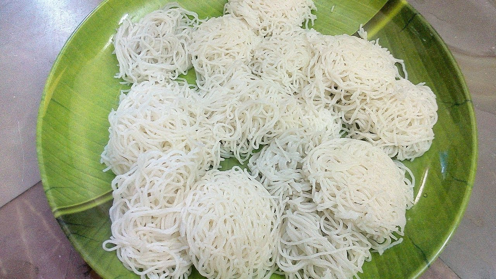5. Kuzhi Panayaram
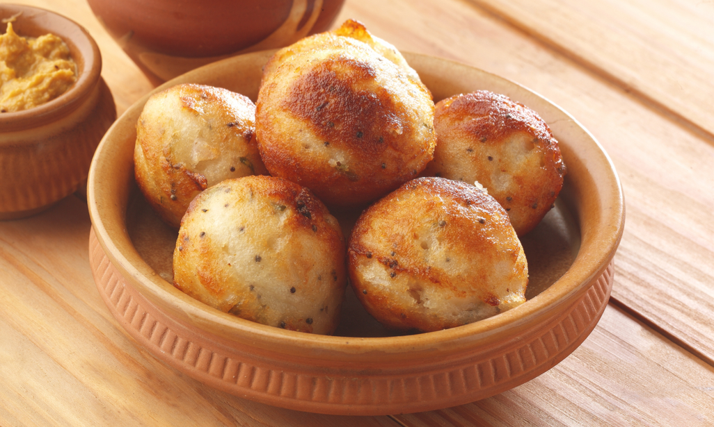6. Masal/Kara Vadai

7. Ulundhu/Medhu Vadai

8. Elumichai Sadham

9. Veg Sambar
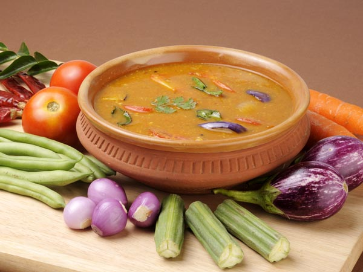10. Thakkali Sadham

11. Rava Kesari

12. Kara/Ven Pongal

13. Adhirasam
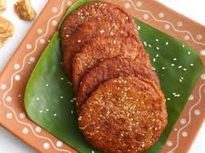14. Mor Kulambu
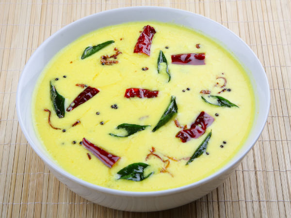15. Sambar Sadham
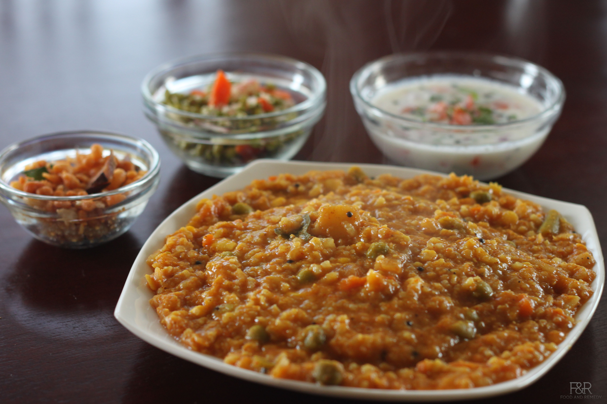16. Vazhakkai Poriyal
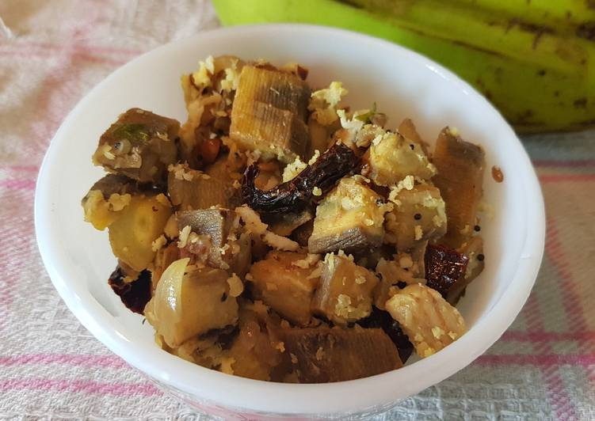17. Thayir Sadham
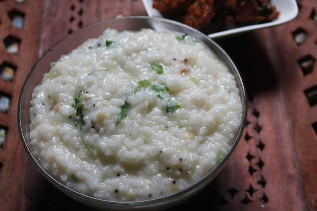18. Managa Urugai
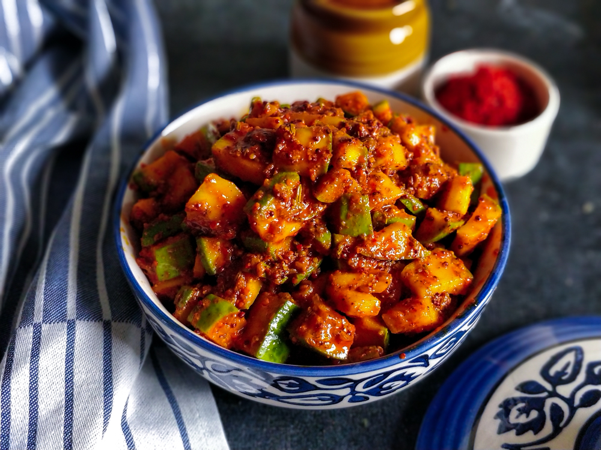19. Ennai Katharikai
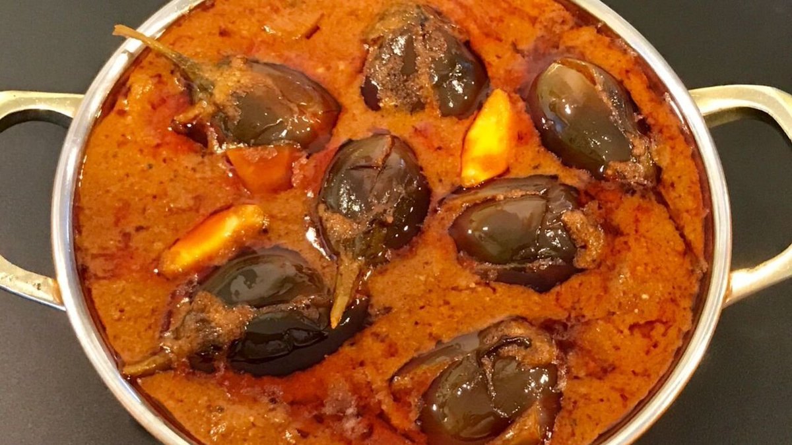20. Kozhukattai
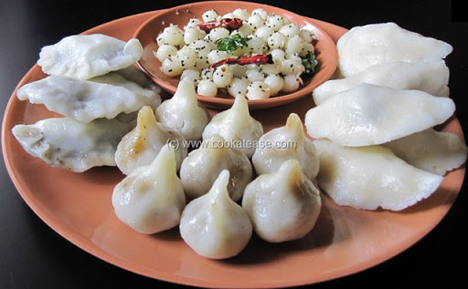21. Kepakoozh
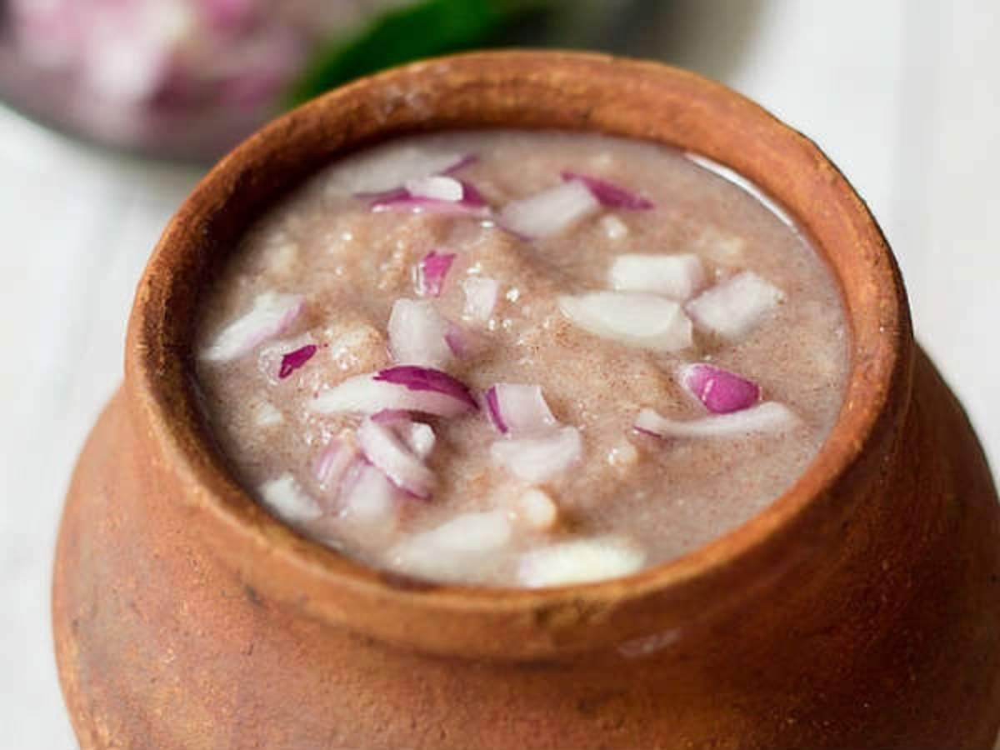22. Semiya Payasam
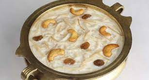23. Uppu Urundai
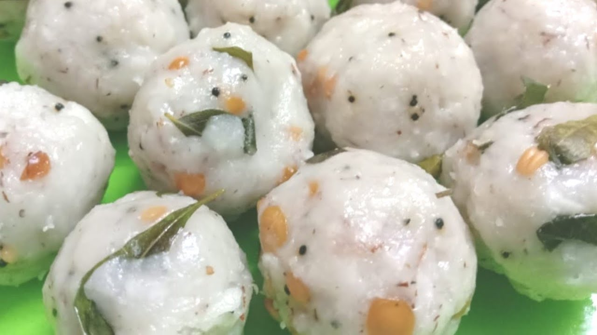24. Milagu Rasam
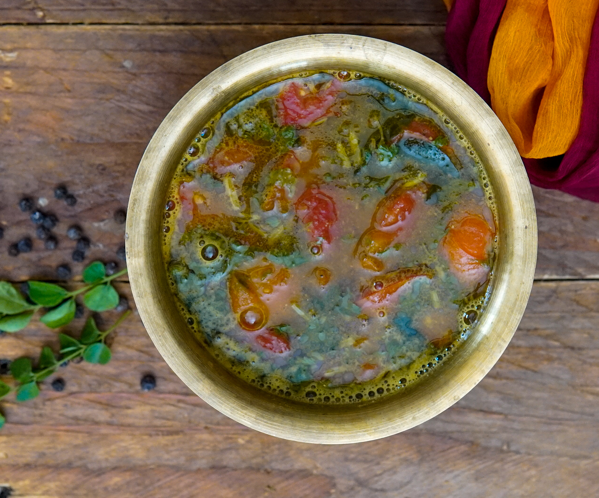25. Arisi Puttu
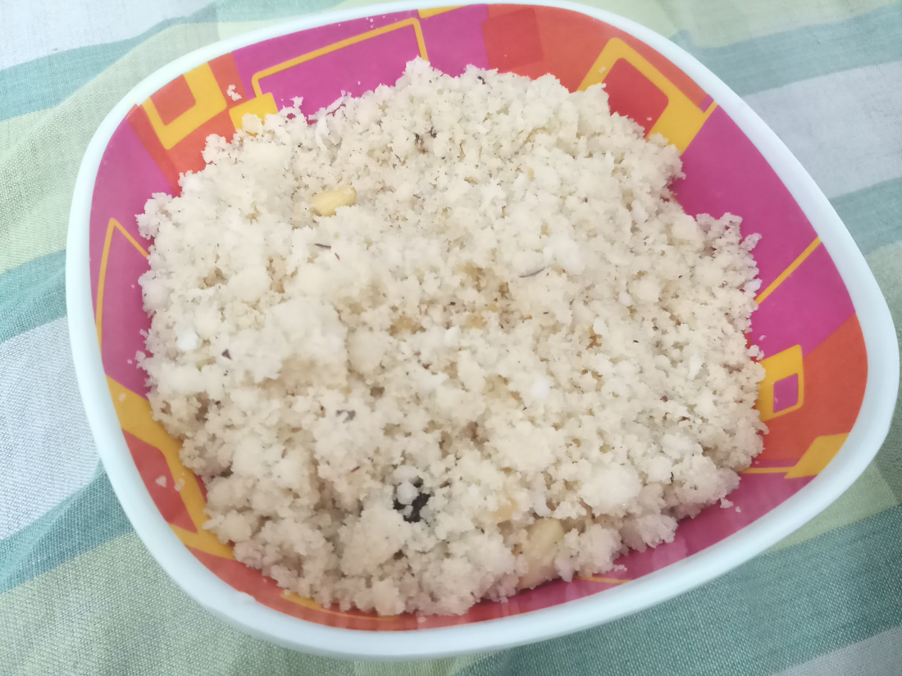26. Kadalai Chutney
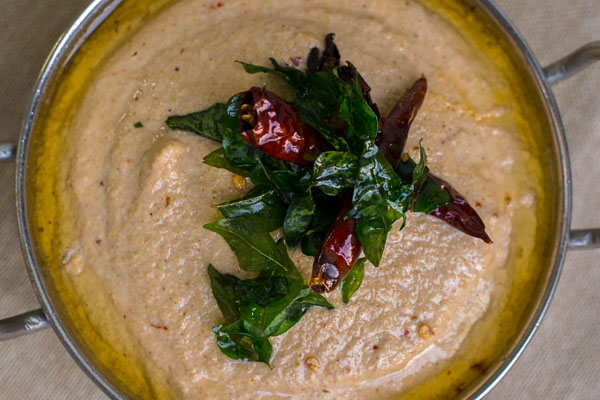27. Semiya Upma
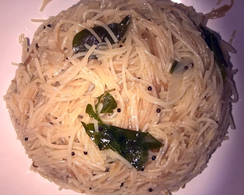28. Paal Paniyaram
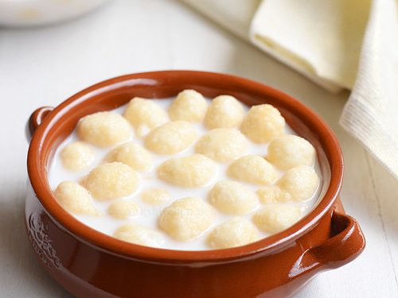29. Puliyodharai
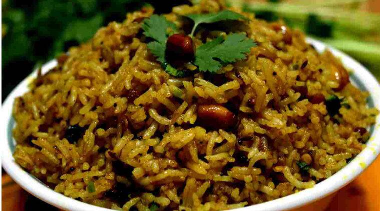30. Kezhvaraghu Adai